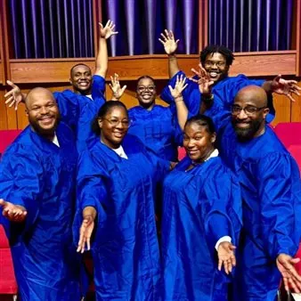

lun 7 dic · dalle 21:00
Gospelive Festival - David Gulley & The Cleveland Chorale
Il grande gospel americano arriva a Pasiano: David Gulley & The Cleveland Chorale sul palco del Teatro Gozzi Il 7 dicembre 2026, il Teatro Comunale “A. Gozzi” di Pasiano di Pordenone ospiterà un appuntamento imperdibile della stagione invernale: il concerto live di David Gulley…
 Indicazioni
Indicazioni
- Costi e prenotazioni
- Costo non indicato · Prenotazione non indicata
- Programma
- Programma da verificare. Apri la fonte ufficiale per orari e possibili aggiornamenti.
- In caso di maltempo
- Nessuna indicazione specifica pubblicata.
- Note
- Acquisito automaticamente dalla fonte.
L’EVENTO
Descrizione completa
Il grande gospel americano arriva a Pasiano: David Gulley & The Cleveland Chorale sul palco del Teatro Gozzi L’atmosfera magica e l’energia travolgente della musica sacra afroamericana si preparano a riscaldare il cuore del Friuli: il concerto live di David Gulley & The Cleveland Chorale . Fondato nel febbraio del 2022 a Cleveland, in Ohio , questo straordinario ensemble vocale si è rapidamente imposto come una delle realtà più vibranti, fresche e autentiche del panorama gospel internazionale. Il coro nasce con una missione profonda che supera il concetto di semplice intrattenimento: utilizzare la forza della musica corale come uno strumento di guarigione, restaurazione e trasformazione sociale all’interno delle comunità. L’approccio artistico del gruppo affonda le sue radici nella più pura e viscerale tradizione degli spirituals afroamericani, arricchendosi al contempo di arrangiamenti moderni e di una straordinaria potenza vocale contemporanea. Sul palco del Teatro Gozzi, David Gulley guiderà una formazione che schiera voci d’élite del panorama statunitense: i soprani Tina Farmer e Mariae Broome , i tenori Christian Key e Tammy Burge e il baritono Brooke Person . A tessere la perfetta trama ritmica e armonica dello spettacolo ci sarà la precisione millimetrica di Javert Haynes alla tastiera. Un appuntamento con la grande musica da segnare in agenda per iniziare nel segno dell’emozione il mese delle festività.
Info e biglietti su: Lunedì 7 dicembre 2026 · GospeLive Festival
IL PROGRAMMA
Programma e orari
Appuntamenti raccolti dalle fonti elencate. Dove manca un orario, non è ancora disponibile in questa scheda.
Programma pubblicato
- Dal 2026-12-07 al 2026-12-07
INFORMAZIONI UTILI
Prima di partire
- Controllare la fonte prima di partire.
ORGANIZZAZIONE